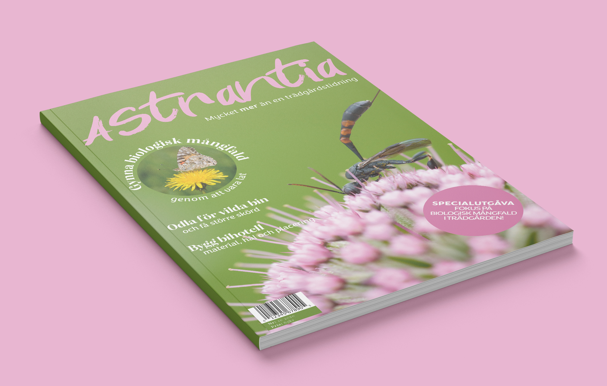
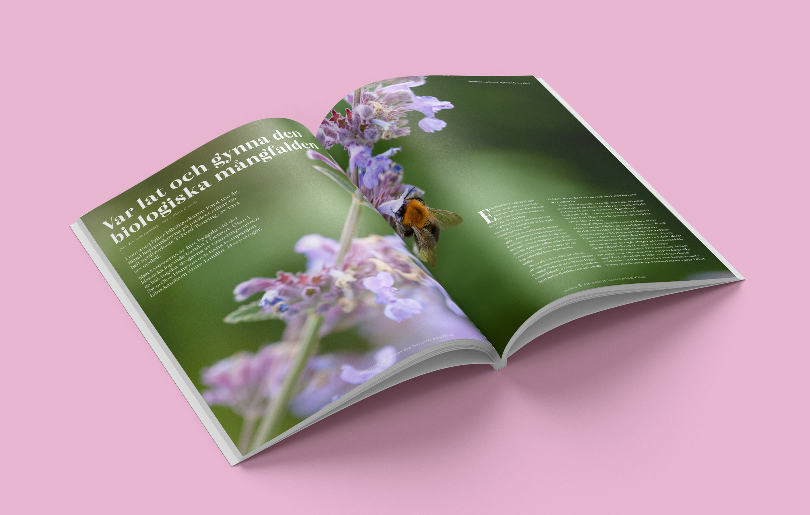

Magasindesign
Roll: allt
Programvara: indesign
Slutprodukt: trädgårdsmagasinet Astrantia
Översikt
För ett projekt på Högskolan Dalarna skulle ett magasin skapas inom en specifik genre, i det här fallet trädgård. Sless arbetsmodell användes för skapandet av magasinet eftersom det gav en bra grund att stå på och magasinet kunde förfinas i omgångar. Genom bl.a. en genreanalys kunde jag identifiera vad som funkar för den valda genren både inom Sverige och internationellt och vilka målgruppen var. För en personlig touch skapade jag ett specialnummer av en trädgårdstidning som fokuserade på biologisk mångfald i trädgården.
Processen
Sless arbetsmodell användes för skapandet av magasinet eftersom det gav en bra grund att stå på och magasinet kunde förfinas i omgångar. Genreanalysen i början av arbetet gick ut på att hitta rätt stil och utformning för genren och samtidigt få en överblick av målgruppen för att enklare kunna designa efter den. Flera magasin valdes från både Sverige och Storbritannien och granskades i detalj t.ex. hur såg teckensnitten ut, användes anfanger eller andra element som exempelvis ryckcitat, hur var bildspråket, vilka färger använde man och hur utformades omslaget. Efter det kunde en moodboard baserat på analysen tas fram, sidlayouter skissades och några personas skapades för att ha någon att förhålla sig under skapandet. Under arbetets gång visades magasinet för några personer och baserat på feedback kunde designen förfinas och byggas upp.
Resultat
Magasinet hade totalt tolv sidor inkl. omslaget och innehöll en innehållsförteckning, minst en plocksida, minst ett större reportage, en redaktionsruta och reklam för kommande nummer.